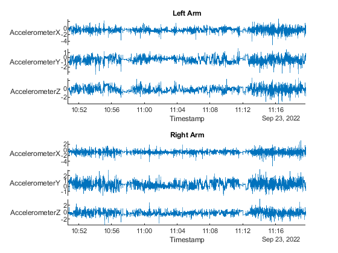
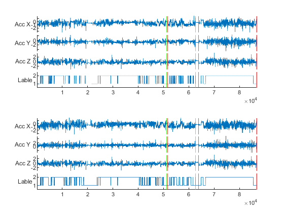

Contents
- Upper limb functioning from accelerometer data validation
- Input data paths and names
- manulal input no longer nesesary after this point
- Set up the Import Options and import the data
- Create timetable data and cut out relevant time section
- Redefine axis to Lum configuration
- resample data from 30Hz (our sensors) to 50Hz (needed for the model)
- Set up the Import Options and import the VIDEO data
- get timepoints of labeled events
- Get frame number
- code the functional activities
- plot to check the results
Upper limb functioning from accelerometer data validation
This code was commissioned by Prof An de Groef and Prof Liesbet De Baets for the UPLIFT breast cancer project and is writen for that purpose. This code reads in the csv files from the actigraph sensors and the annotated video data from Adobe Premiere Pro. This code preprocesses the accelerometer and video data to be used in the machine learning model developed by Lum and colleagues.
- Sensor specifications: ActiGraph wGT3X-BT (Serial Numbers Starting with MOS2)
- camera specifications: 25 fps
Writen by dr. Jill Emmerzaal, Research group for Rehabilitation in Internal Disorders Version v1 14-10-2022
references needed: Lum, P. S., Shu, L., Bochniewicz, E. M., Tran, T., Chang, L. C., Barth, J., & Dromerick, A. W. (2020). Improving accelerometry-based measurement of functional use of the upper extremity after stroke: machine learning versus counts threshold method. Neurorehabilitation and neural repair, 34(12), 1078-1087.
clearvars; close all; clc
Input data paths and names
INPUT 1: corresponding path where all files are to path.root INPUT 2: corresponging ppID number that is being analysed INPUT 3: approximate timerange when this participant was measured INPUT 4: file names to the data for left, right, and video files respectively
path.root = 'C:\Users\u0117545\KU Leuven\An De Groef - DATA\UL Functioning pilot test'; ppID = 'Trail 2'; TR = timerange("23/09/2022 10:50:42.467", '23/09/2022 11:19:42.834'); file_l = 'MOS2D31170535 (2022-09-26)RAW L.csv'; file_r = 'MOS2D31170705 (2022-09-26)RAW R.csv'; file_video = 'OUTPUT_Pilot_002_3.csv';
manulal input no longer nesesary after this point
fileName_L = fullfile(path.root, ppID, 'csv', file_l); fileName_R = fullfile(path.root, ppID, 'csv', file_r); FileName_video = fullfile(path.root, file_video);
Set up the Import Options and import the data
opts = delimitedTextImportOptions("NumVariables", 4); % Specify range and delimiter opts.DataLines = [12, Inf]; opts.Delimiter = ","; % Specify column names and types opts.VariableNames = ["Timestamp", "AccelerometerX", "AccelerometerY", "AccelerometerZ"]; opts.VariableTypes = ["datetime", "double", "double", "double"]; % Specify file level properties opts.ExtraColumnsRule = "ignore"; opts.EmptyLineRule = "read"; % Specify variable properties opts = setvaropts(opts, "Timestamp", "InputFormat", "dd/MM/yyyy HH:mm:ss.SSS"); % Import the data L = readtable(fileName_L, opts); R = readtable(fileName_R, opts); % Clear temporary variables clear opts
Create timetable data and cut out relevant time section
L_time = table2timetable(L); data.L_time = L_time(TR,:); R_time = table2timetable(R); data.R_time = R_time(TR,:); figure; tiledlayout('flow') nexttile stackedplot(data.L_time); title('Left Arm') nexttile stackedplot(data.R_time); title('Right Arm') clear R_time L_time
Redefine axis to Lum configuration


% Left acc.x = data.L_time.AccelerometerY; acc.y = data.L_time.AccelerometerX; acc.z = data.R_time.AccelerometerZ; data.L = [acc.x, acc.y, acc.z]; clear acc % Right acc.x = data.R_time.AccelerometerY * -1; acc.y = data.R_time.AccelerometerX * -1; acc.z = data.R_time.AccelerometerZ; data.R = [acc.x, acc.y, acc.z]; clear acc
resample data from 30Hz (our sensors) to 50Hz (needed for the model)
fs = 30; fs_new = 50; x = 1:length(data.L); % old time axis of the data xq = 1:fs/fs_new:length(data.L); % new time axis for the data data.L_sp = interp1(x, data.L, xq, 'spline'); data.R_sp = interp1(x, data.R, xq, 'spline');
Set up the Import Options and import the VIDEO data
opts = delimitedTextImportOptions("NumVariables", 6, "Encoding", "UTF16-LE"); % Specify range and delimiter opts.DataLines = [2, Inf]; opts.Delimiter = "\t"; % Specify column names and types opts.VariableNames = ["MarkerName", "Description", "In", "Out", "Duration", "MarkerType"]; opts.VariableTypes = ["categorical", "string", "string", "string", "string", "categorical"]; % Specify file level properties opts.ExtraColumnsRule = "ignore"; opts.EmptyLineRule = "read"; % Specify variable properties opts = setvaropts(opts, ["Description", "In", "Out", "Duration"], "WhitespaceRule", "preserve"); opts = setvaropts(opts, ["MarkerName", "Description", "In", "Out", "Duration", "MarkerType"], "EmptyFieldRule", "auto"); % Import the data vid = readtable(FileName_video, opts); % Clear temporary variables clear opts
get timepoints of labeled events
From the marker data in the video we get the timepoints as HH:mm:ss:ff meaning hours:minutes:seconds:frames The frames go from 00 till 24 and the 25th is the addition of a second. for the firts rudimental segmentation we will only ise HH:mm:ss. The frames data will be used in the next section
in = char(vid.In); for idx = 1:length(in) tp(idx,1) = duration(in(idx,1:8)); end %end times of the activity out = char(vid.Out); for idx = 1:length(out) tp(idx,2) = duration(out(idx,1:8)); end
Get frame number
start times of the labels in the video data To attone for the frequency difference and the lack of miliseconds in the video data, we'll use the frame rate of the video to round the frames up or down.
- Block 1 if the last 3 numbers [0:6] = frames + (0 * 2);
- Block 2 if the last 2 numbers [7:12] = frames + (6 * 2);
- Block 3 if the last 2 numbers [13:18] = frames + (12 * 2);
- Block 4 if the last 2 numbers [19:24] = frames + (18 * 2);
formula to get frame number for the labeled activity at point idx:
(seconds(tp(idx,1)) * vd_frames) / vd_secs
vd_secs = seconds(duration(tp(end,2))); % total length of the video vd_frames = vd_secs * 50; % total length of the video in frames relevantframe = zeros(size(tp,1),2); % Start point of the markers for idx = 1:length(in) if str2double(in(idx,10:11)) <= 6 % Block_1 relevantframe(idx,1) = (seconds(tp(idx,1)) * vd_frames) / vd_secs; relevantframe(idx,1) = relevantframe(idx,1) + (0 * 2); elseif str2double(in(idx,10:11)) > 6 && str2double(in(idx,10:11)) <= 12 % Block_2 relevantframe(idx,1) = (seconds(tp(idx,1)) * vd_frames) / vd_secs; relevantframe(idx,1) = relevantframe(idx,1) + (6 * 2); elseif str2double(in(idx,10:11)) > 12 && str2double(in(idx,10:11)) <= 18 % Block_3 relevantframe(idx,1) = (seconds(tp(idx,1)) * vd_frames) / vd_secs; relevantframe(idx,1) = relevantframe(idx,1) + (12 * 2); elseif str2double(in(idx,10:11)) > 18 && str2double(in(idx,10:11)) <= 24 % Block_4 relevantframe(idx,1) = (seconds(tp(idx,1)) * vd_frames) / vd_secs; relevantframe(idx,1) = relevantframe(idx,1) + (18 * 2); end end % end point of the markers for idx = 1:length(out) if str2double(out(idx,10:11)) <= 6 % Block_1 relevantframe(idx,2) = (seconds(tp(idx,2)) * vd_frames) / vd_secs; relevantframe(idx,2) = relevantframe(idx,2) + (0 * 2); elseif str2double(out(idx,10:11)) > 6 && str2double(out(idx,10:11)) <= 12 % Block_2 relevantframe(idx,2) = (seconds(tp(idx,2)) * vd_frames) / vd_secs; relevantframe(idx,2) = relevantframe(idx,2) + (6 * 2); elseif str2double(out(idx,10:11)) > 12 && str2double(out(idx,10:11)) <= 18 % Block_3 relevantframe(idx,2) = (seconds(tp(idx,2)) * vd_frames) / vd_secs; relevantframe(idx,2) = relevantframe(idx,2) + (12 * 2); elseif str2double(out(idx,10:11)) > 18 && str2double(out(idx,10:11)) <= 24 % Block_4 relevantframe(idx,2) = (seconds(tp(idx,2)) * vd_frames) / vd_secs; relevantframe(idx,2) = relevantframe(idx,2) + (18 * 2); end end vid.frameIn = relevantframe(:,1); vid.frameOut = relevantframe(:,2); clear relevantframe
code the functional activities
coding is 1=>nonfunctional, 2=>functional, 0=>unknown From the marker names of the video data we know if there is activity of the left or right side or bimanual. The marker data is added as the fourth collum to acceleration signals. The matrix now consists of
- Column 1: x-acceleration
- Column 2: y-acceleration
- Column 3: z-acceleration
- Column 4: labels.
% left LeftActive = vid(ismember(vid.MarkerName,{'L', 'L + R'}), :); for idx = 1:height(LeftActive) data.L_sp(LeftActive.frameIn(idx):LeftActive.frameOut(idx),4) = 2; end data.L_sp(data.L_sp(:,4)==0, 4) = 1; % right RightActive = vid(ismember(vid.MarkerName, {'R', 'L + R'}),:); for idx = 1:height(RightActive) data.R_sp(RightActive.frameIn(idx):RightActive.frameOut(idx),4) = 2; end data.R_sp(data.R_sp(:,4)==0, 4) = 1;
plot to check the results
SpotCheck = vid(ismember(vid.MarkerName, {'Calibratie', 'SpotCheck'}),:);
figure
nexttile
h = stackedplot(data.L_sp);
ax = findobj(h.NodeChildren, 'Type', 'Axes');
arrayfun(@(h)xline(h, SpotCheck.frameIn, 'g-', 'LineWidth',0.5), ax)
arrayfun(@(h)xline(h, SpotCheck.frameOut, 'r-', 'LineWidth', 0.5), ax)
set(h, 'DisplayLabels',["Acc X" "Acc Y" "Acc Z" "Lable"])
h.AxesProperties(4).YLimits = [0.5 2.5];
nexttile
h = stackedplot(data.R_sp);
ax = findobj(h.NodeChildren, 'Type', 'Axes');
arrayfun(@(h)xline(h,SpotCheck.frameIn, 'g-', 'LineWidth',0.5), ax)
arrayfun(@(h)xline(h, SpotCheck.frameOut, 'r-', 'LineWidth', 0.5),ax)
set(h, 'DisplayLabels',["Acc X" "Acc Y" "Acc Z" "Lable"])
h.AxesProperties(4).YLimits = [0.5 2.5];
